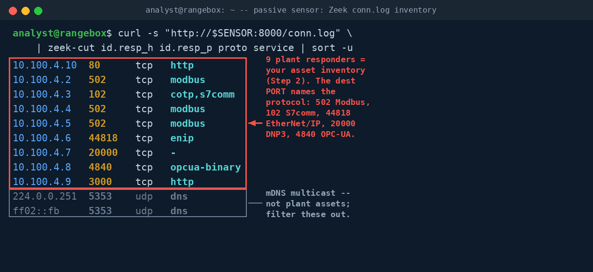
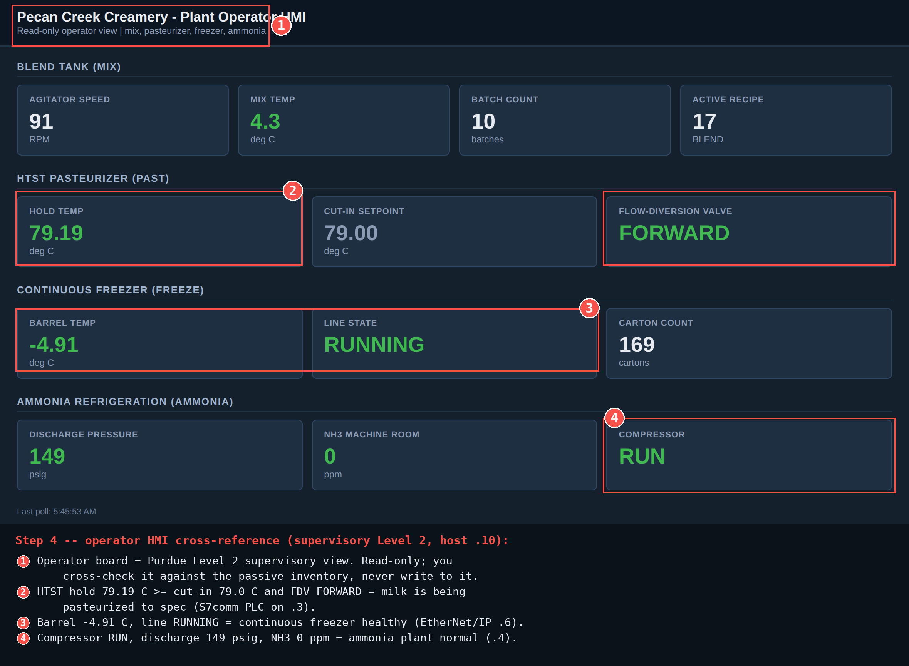

Exercise OTSOC-1.1: First Day in the OT SOC
Scenario
Welcome to the Pecan Creek Creamery OT SOC. You are the new analyst on shift. The plant runs ice-cream mix blending, HTST pasteurization, ammonia refrigeration, a continuous freezer, cold storage, and a supervisory layer. Your job in the SOC is to watch, to understand, and to report. You are a defender: you never attack, scan, or write to any plant device.
Your only data source today is the passive network sensor at sensor.pcc.local. The sensor sits in the IT/OT DMZ and mirrors the control and supervisory networks. It runs Zeek with the CISA ICSNPP industrial-protocol parsers (modbus, s7comm, enip, dnp3, opcua-binary) plus Suricata. The sensor serves its Zeek logs from a recorded capture of the plant control network, so the hosts in those logs carry the plant's own addressing (10.100.4.x), not your session subnet. The sensor never writes to the plant, and neither do you. You pull its read-only logs over HTTP at http://sensor.pcc.local:8000/.
The inherited asset spreadsheet you were handed is wrong in three places: a wrong IP, a missing device, and a misidentified role. Use the passive logs to build a correct first-pass inventory. A captured host lines up with its live device in your Exercise Network panel by their shared last octet, so if you cross-reference the operator HMI at hmi.pcc.local, use the panel IP whose last octet matches the host you saw in the capture. The read-only kiosk account is operator / PecanCreek#2026. You do not need it to finish this exercise.
Why this matters
A first shift in an OT SOC is the only time you see the plant before anyone adapts to you. Once operations knows an analyst is watching, alarm noise gets tidied and the one odd flow gets explained away. A quiet passive pass on day one gives you the baseline every later alert is measured against.
In IT you reach for Nmap on instinct. In OT that instinct is a hazard: a fragile PLC can fault under an aggressive service scan and stop production. The discipline you build here, reading the wire instead of touching it, is the core habit of OT defense. Passive sensor logs already carry every host, port, and protocol you need. The deliverable that matters is the corrected asset inventory and the Purdue map; the onboarding marker you recover at the end is only the flag that proves your tour was complete.
| Credentials in scope | Username | Password | Where it is used |
|---|---|---|---|
| Operator HMI kiosk | operator |
PecanCreek#2026 |
Read-only cross-reference at hmi.pcc.local (optional) |
Before You Begin
Every command in the OTSOC track runs on your analysis workstation, a Kali-based RangeBox. You are the SOC analyst sitting at that workstation; the plant hosts are targets you observe across the network. Nothing in this exercise runs on a plant device.
After the lab transitions to Running, the Exercise Network panel on the track page lists every target with its IP. These labs set show_target_ips, so you get the exact per-host address instead of just the /24. The last octet is fixed by role: the sensor is .11, the blend tank .2, the pasteurizer .3, the cold-storage RTU .7, and so on down the panel.
Read the IPs off the panel rather than hardcoding them, because every student gets a different /24. Two subnets are in play and they are easy to confuse. The devices you connect to live (the sensor, and optionally the HMI) answer on your session subnet, the address shown in the panel. The hosts inside the sensor's recorded logs carry the plant control network 10.100.4.x. The two line up by their shared last octet: a captured host ending in .10 is the same device as the panel HMI ending in .10. For this exercise everything starts at the sensor, so capture its panel IP first.
Kali - capture the sensor IP from the panel
Confirm the sensor answers before you go further. A quick read of the index proves name resolution and reachability.
You should see a directory index listing log files such as conn.log, modbus.log, and SENSOR_README.txt. An empty reply or a hang means the lab is not Running yet; wait for the panel to show all targets, then retry. Later exercises in this track assume you already know to read IPs from the panel into a shell variable, so they will not repeat this section.
Learning Objectives
- Pull the read-only sensor logs over HTTP without touching the plant
- Enumerate every talking host from the Zeek
conn.log - Label each host by protocol and Purdue level
- Correct the three errors in the inherited asset spreadsheet
- Recover the onboarding marker and assemble the flag
Background: The Purdue Reference Model
The Purdue Enterprise Reference Architecture is the default way to reason about an ICS network. It stacks the environment into layers from physical instrumentation at the bottom to enterprise IT at the top. As an OT defender you place every asset you find onto this model so that segmentation gaps and out-of-place flows become obvious.
| Level | Name | Typical assets at Pecan Creek |
|---|---|---|
| 0 | Physical process | Agitators, valves, compressors, freezer barrel |
| 1 | Basic control | Blend PLC, pasteurizer PLC, ammonia BPCS, safety PLC, freezer, cold RTU |
| 2 | Supervisory control | Operator HMI |
| 3 | Operations | Historian |
| 3.5 | IT/OT DMZ | Passive sensor |
| 4 | Enterprise IT | File shares, email (out of scope) |
IT vs OT priorities
The CIA triad (Confidentiality, Integrity, Availability) is the IT default. OT flips it to AIC: Availability first. Losing a historian read for ten minutes is a nuisance. Faulting a running PLC for ten minutes stops the line and spoils product, which is exactly why you stay passive.
Walkthrough
Step 1: Read the SOC onboarding brief
The SOC manager left an onboarding brief at the top of the sensor log volume. Read it before anything else: it explains the data set, names the protocols the sensor parses, and carries the marker your flag is built from. Pulling a text file off the sensor is a read; it touches nothing on the plant floor.
Expected output (abridged)
Pecan Creek Creamery - OT SOC passive network sensor
hostname: sensor.pcc.local purdue: IT/OT DMZ (Level 3.5) role: SPAN target
This sensor mirrors the control and supervisory plant networks and runs Zeek
with the CISA ICSNPP industrial protocol parsers ...
SENSOR_MARKER=pcc_soc_sensor_online_...
Key files: conn.log, modbus.log, s7comm.log, enip.log, dnp3.log, opcua*.log
Read the whole brief, but note the SENSOR_MARKER= line in particular. The marker value is the descriptive string you wrap into the flag at the end. Note the protocol parsers listed: they tell you which ICSNPP log to open for each kind of device.
Step 2: Enumerate every talking host from conn.log
The Zeek conn.log is one row per connection, with source, destination, port, and service. Pulling it and cutting to the fields you care about gives you the full list of hosts that speak on the mirrored networks. Watch the destination port column: in OT it is the strongest first clue to a device's role. Because these rows come from the recorded capture, the responder addresses are the plant's own 10.100.4.x.
Kali - list distinct destination host and port pairs
Expected output (the capture uses the plant control network 10.100.4.0/24)
Each row is a host that answered on the wire. The destination port maps to a protocol: 502 is Modbus/TCP, 102 is S7comm, 20000 is DNP3, 44818 is EtherNet/IP, 4840 is OPC-UA, 3000 and 80 are HTTP services. Write down every distinct responder; you will label each one in the next step. If zeek-cut is not on your path, the raw conn.log is still readable with column -t, and the field names sit in the #fields header line.

Step 3: Label each host by protocol with the ICSNPP logs
Port numbers narrow the role, but the ICSNPP protocol logs confirm it. The sensor writes a per-protocol log: modbus.log, s7comm.log, enip.log, and opcua_binary.log. Reading the responder set in each one tells you exactly which device speaks which industrial protocol, with no guessing and no active probe.
Kali - confirm Modbus and S7comm responders
Expected output (plant control network addressing)
Three hosts speak Modbus and one speaks S7comm. Repeat the same read against enip.log and opcua_binary.log to place the continuous freezer (EtherNet/IP on .6) and the supervisory OPC-UA server (.8). A host that speaks S7comm on 102 is the pasteurizer PLC. The cold-storage RTU on .7 speaks a minimal DNP3 dialect that Zeek records by port in conn.log (20000) rather than a full dnp3.log, so you identify it from its responder port. Match each responder IP back to the hostname column on the Exercise Network panel by its last octet.
Step 4: Build the corrected inventory and Purdue map
You now have an observed truth set from the wire. Lay it next to the inherited spreadsheet and three errors fall out: one host listed at the wrong IP, one device that talks on the wire but is not on the sheet at all, and one device whose role was mislabeled. Fill in the table from what the sensor actually saw, not from what the spreadsheet claimed. Record the last octet you observed for each host; that octet is how you find the same device live on the panel.
Corrected asset inventory:
Host Observed octet Protocol / Port Role Purdue Level mix.pcc.local .2 Modbus/TCP 502 Blend tank PLC 1 past.pcc.local .3 S7comm 102 Pasteurizer PLC 1 ammonia.pcc.local .4 Modbus/TCP 502 Refrigeration BPCS 1 sis.pcc.local .5 Modbus/TCP 502 Ammonia safety PLC 1 freeze.pcc.local .6 EtherNet/IP 44818 Continuous freezer 1 cold.pcc.local .7 DNP3 20000 Cold-storage RTU 1 opcua.pcc.local .8 OPC-UA 4840 Supervisory server 2 historian.pcc.local .9 HTTP 3000 Historian 3 hmi.pcc.local .10 HTTP 80 Operator HMI 2 sensor.pcc.local .11 HTTP 8000 Passive sensor 3.5 Justify at least three placements in writing: why the safety PLC sits at Level 1 alongside the BPCS, why the historian is Level 3 and not Level 2, and why the sensor belongs in the 3.5 DMZ.
Note that the safety PLC (sis) and the refrigeration BPCS (ammonia) both speak Modbus on 502 but are distinct devices: the BPCS only annunciates, while the safety PLC holds the trip logic. Treating them as one host is the kind of role error the inherited sheet contains.
The one live cross-reference in this exercise is optional. If you want to eyeball the operator SCADA board, the captured HMI host ended in .10, so open the panel IP whose last octet is .10, on port 80, in your browser. The .pcc.local names resolve for the plant devices on the control network, not from your VPN, so you always connect by the panel IP.
Operator HMI - optional read-only cross-reference

Output Interpretation
- Every responder in
conn.logis a real device; the destination port is your first role signal, and the matching ICSNPP log is the confirmation - Three hosts on Modbus
502is not three identical devices: vendor ident and behavior separate the blend tank, the BPCS, and the safety PLC - An HTTP service on
3000(historian) versus80(HMI) is a Purdue-level tell: the historian is an operations tool at Level 3, the HMI a supervisory tool at Level 2 - The marker string in
SENSOR_README.txtis unauthenticated telemetry, a convention and not a security control; any host on the DMZ segment can read it
Analysis Questions
1. Why is a passive sensor the correct first tool in an OT SOC instead of Nmap?
Reveal answer
A fielded PLC can fault, watchdog-reset, or trip safety logic under an aggressive scan, and in OT availability is the top priority. The passive sensor already carries every host, port, and protocol in its Zeek and ICSNPP logs, so you get a complete inventory with zero packets sent to the plant. You only consider an active query later, narrowly, and with approval.
2. Two hosts both answer Modbus on 502. How do you tell the BPCS from the safety PLC without writing to either?
Reveal answer
Read-only behavior separates them. Their vendor ident blocks, register maps, and the role each plays in the refrigeration loop differ. The BPCS annunciates ammonia status; the independent safety PLC holds the trip setpoints. Confirming role from passive logs and read-only ident, never from a write, is the OT-safe method.
3. The spreadsheet had three errors. Which class of error is most dangerous to leave uncorrected in an OT SOC?
Reveal answer
The missing device is the worst. An undocumented host that talks on the wire is an asset you cannot monitor, patch, or alert on, and an attacker's foothold could hide inside its expected traffic. A wrong IP or a mislabeled role degrades your map; an unknown asset blinds it.
Capture the Flag
You derive the flag from the onboarding marker the SOC manager planted in SENSOR_README.txt. The brief carries a single SENSOR_MARKER= line; the value after the equals sign is the descriptive string that names what you accomplished, a passive sensor online in the Purdue DMZ. Wrap that marker value in OCR{...} to form the submission. You earn it by reading the sensor, not by touching the plant.
Kali - extract the marker
The command prints SENSOR_MARKER= followed by the descriptive value. Take that value and wrap it as the flag.
Flag format:
OCR{<SENSOR_MARKER value>}
Submit the assembled flag in the OCR platform.